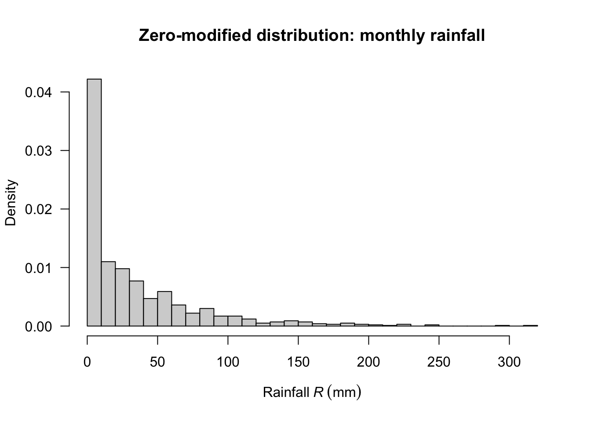

9 Mixed distributions
On completion of this chapter, you should be able to:
- recognise mixed random variables.
- recognise zero-modified distributions and compound Poisson–gamma models for modelling mixed random variables.
- know the basic properties of the above approaches.
- apply these approaches as appropriate to problem solving.
9.1 Introduction
Mixed random variables commonly occur in practice, in diverse applications such as insurance, agriculture, climatology, fisheries, etc. In most practical cases, a mixed random variable \(Y\) has a discrete probability mass at \(X = 0\), and is also continuous for \(X > 0\). Example include:
- Modelling insurance: some portfolios will have zero claims; however, when claims are made, the total claim amount has a positive continuous distribution.
- Modelling rainfall: some months may receive exactly zero rainfall; otherwise, the monthly rainfall has a continuous distribution.
- Modelling fish catch: some trawls will catch zero fish; other trawls, however, will catch a positive continuous mass of fish.
Continuous data with a discrete probability at zero can be modelled in various ways, depending on how the discrete probability at \(X = 0\) is modelled Two approaches are considered in this chapter.
Zero-modified distributions (Sect. 9.2) treat the zeros as emerging from a two-step process. Step one is a binary process, that models whether the event of interest (i.e., an insurance claim is made; rainfall is recorded; fish are caught) occurs. Step two is a model for the continuous data of interest, conditional on the event of interest occurring.
Compound Poisson–gamma models (Sect. 9.3) generates zeros from a single process, when a Poisson count of underlying events equals zero.
9.2 Zero-modified distributions
Zero-modified distributions assume a continuous distribution for positive continuous data, modified to have a discrete probability for \(X = 0\). The continuous distribution is sometimes an exponential distribution (Sect. 8.4), or more commonly a gamma distribution (Sect. 8.5), though other distributions can also be used. Zero-modified distributions are also called zero-altered distributions or hurdle models.
9.2.1 Definitions
A zero-modified distributions treats zeros and positive values as arising from two separate processes. The first process is a binary model that determines whether an event occurs or not. The second process that describes the distribution of values, conditional on the values being positive. A zero-modified distribution is useful when the zero-generating process is believed to be distinct from the process driving variation among positive values; for example, whether a household buys alcohol is a different process than how much a household spends on alcohol if they do buy alcohol.
A zero-modified distributions treats the zero values of the random variable \(X\) as emerging from a two-step process. The first step uses a Bernoulli distribution (Sect. 7.3) to model a random variable \(Y\) that defines whether an event of interest occurs: \[ \Pr(Y) = \begin{cases} 1 - p & \text{if $Y = 0$; i.e., the event of interest does not occur;}\\ p & \text{if $Y = 1$; i.e., the event of interest does occur.} \end{cases} \] If the event does occur (i.e., conditional on \(X > 0\)), with probability \(1 - p\), then the continuous component is modelled using a probability density function \(f^+_X(x)\) defined for positive real values only (such as an exponential distribution, a gamma distribution or a log-normal distribution).
The probability function for the mixed random variable \(X\) is therefore \[ f_X(x) = \begin{cases} 1 - p & \text{if $x = 0$}\\ p\cdot f^+_X(x) & \text{if $x > 0$,} \end{cases} \] where \(f^+_X(x) = f_{X \mid X > 0}(x)\) is the density function for the continuous distribution defined for \(x\in\mathbb{R}_{+}\). The distribution function is \[ F_X(x) = \begin{cases} 0 & \text{if $x < 0$}\\ 1 - p & \text{if $x = 0$}\\ (1 - p) + p\cdot F^+_X(x) & \text{if $x > 0$,} \end{cases} \] where \(F^+_X(x) = F_{X\mid X > 0}(x)\) is the distribution function for the continuous distribution defined for \(x\in\mathbb{R}_{+}\).
Example 9.1 (Zero-modified model) Consider the mixed random variable \(X\), with probability function \(f_X(x)\). Suppose that, when \(X > 0\), an exponential distribution is used to describe the distribution; that is \[ f^+_X(x) = \frac{1}{\lambda}\exp(-x/\lambda)\quad\text{for $x > 0$}. \] Then, using \(p = 0.7\) and \(\lambda = 1/2\), the probability function of \(X\) is \[ f_X(x) = \begin{cases} 0.3 & \text{if $x = 0$}\\ 0.35\cdot \exp(-x/2) & \text{if $x > 0$;} \end{cases} \] Similarly, the distribution function of \(X\) is \[ F_X(x) = \begin{cases} 0 & \text{if $ x < 0$}\\ 0.3 & \text{if $x = 0$}\\ 0.7\cdot \left(1 - \exp(-x/2)\right) & \text{if $x > 0$;} \end{cases} \] The probability function and distribution function are shown in Fig. 9.1.

FIGURE 9.1: A zero-modified distributions, showing an exponential distribution for the continuous component.
9.2.2 Properties
The expected value of the random variable \(X\) can be found first separating the discrete and continuous parts of the distribution: \[\begin{align*} \operatorname{E}[X] &= \operatorname{E}[X\mid X = 0] + \operatorname{E}[X\mid X > 0]\\ &= (1 - p)\times 0 + p \operatorname{E}[X\mid X > 0]\\ &= p \mu^+, \end{align*}\] where \(\mu^+\) denotes \(\operatorname{E}[X\mid X > 0]\), the expected value of the distribution defined for \(X > 0\). Similarly, \[ \operatorname{E}[X^2] = \operatorname{E}[X^2 \mid X > 0] = p (\mu^2)^+, \] where \((\mu^2)^+\) denotes \(\operatorname{E}[X^2\mid X > 0]\). Then, the variance of \(X\) is \[\begin{align*} \operatorname{var}[X] &= p[(\mu^2)^+ - p(\mu^+)^2]\\ &= p(\sigma^2)^+ + p(1 - p)(\mu^+)^2. \end{align*}\] where \(\sigma^2 = \operatorname{var}[X \mid X > 0]\).
The same approach also gives the MGF as \[\begin{align*} M_X(t) &= (1 - p) + p\cdot M_{X^+}(t)\\ &= (1 - p) + p\cdot M_{X\mid X > 0}(t), \end{align*}\] where \(M_{X^+}(t)\) is the MGF of the distribution defined for \(X > 0\).
Clearly, further progress with these expressions requires knowing the distribution of \(X \mid X > 0\)
Example 9.2 (Zero-modified model, using gamma distribution) Consider a random variable \(X\) such that \(p = 0.75\) (and hence \(\Pr(X = 0) = 1 - p = 0.25\)), and where the distribution when \(X > 0\) follows a gamma distribution (Sect. 8.5) having \(\alpha = 2\) and \(\beta = 1\), with the density function \[ f_X^{+}(x; \alpha, \beta) = f_{X\mid X > 0}(x; \alpha, \beta) = \frac{1}{\Gamma(2)} x \exp(-x) \quad\text{for $x > 0$}. \] For this gamma distribution, using results from Sect. 8.5, \(\mu^+ = \operatorname{E}[X\mid X > 0] = \alpha\beta = 2\) and \(\operatorname{var}[X\mid X > 0] = \alpha\beta^2 = 2\). Then, the probability function for \(X\) is \[ f_{X}(x) = \begin{cases} 0.25 & \text{for $x = 0$}\\ 0.75 \times f_X^{+}(x; \alpha, \beta) & \text{for $x > 0$.} \end{cases} \] Then \[\begin{align*} \operatorname{E}[X] &= p\cdot \mu^+ = 0.75 \times 2 = 1.5\\ \operatorname{var}[X] &= p(\sigma^2)^+ + p(1 - p)(\mu^+)^2 = 0.75\times 2 + 0.75\times 0.25\times 1.5^2 \approx 1.921. \end{align*}\] The probability function and distribution function are shown in Fig. 9.2.

FIGURE 9.2: A zero-modified model, using a gamma distribution for the continuous component.
9.3 Compound Poisson–gamma distributions
9.3.1 Definition
A compound Poisson–gamma model generates the point mass at zero through a physically-motivated compound process. The model assumes that events occur according to a Poisson process, and each event contributes an independent gamma-distributed amount to the total. The observed variable \(Y\) is the sum of all the independent contributions. A compound Poisson–gamma distributions, therefore, is a Poisson sum of independent gamma distributions.
When the Poisson count is zero (i.e., when no events occur), the total is exactly zero, naturally producing the point mass without any separate modelling of zeros. When at least one event occurs, the sum of gamma random variables gives a continuous positive value. The compound Poisson–gamma distribution is a unified single-distribution model, and requires the compound Poisson–gamma story to be a plausible description of the data-generating process.
More specifically, suppose the number of events observed (a discrete random variable) is \(N\), such that \[\begin{equation} N \sim \text{Poisson}(\lambda). \tag{9.1} \end{equation}\] That is, an event occurs \(N\) times, where \(N\) follows a Poisson distribution. Given that \(N\) has a Poisson distribution, it follows (from Sect. 7.7) that \[ \Pr(N = 0) = \exp(-\lambda) \] is the probability that zero events are observed (i.e., \(N = 0\)). If, however, \(N > 0\), then for each \(i = 1, 2, \dots, N\), a continuous random variable \(Y_i\) is observed that follows a gamma distribution, such that \[ Y_i \sim \text{Gamma}(\alpha_i, \beta). \] If \(N = 0\), then no events \(Y_i\) are observed at all; however, if \(N > 0\) then \(N\) events are observed and \[ X = \sum_{i = 1}^N Y_i \] has a continuous distribution. Then, \[ X = \begin{cases} 0 & \text{if $N = 0$};\\ \sum_{i = 1}^N Y_i & \text{if $N > 0$}. \end{cases} \] By this definition \(X\) has a compound Poisson–gamma distribution (which are special cases of Tweedie distributions). The distribution of \(X\) has a probability mass at \(X = 0\) where \(\Pr(Y = 0) = \Pr(N = 0) = \exp(-\lambda)\).
Example 9.3 (Rainfall modelling) Consider monthly rainfall \(X\) at a given location. In any given month, \(N\) rainfall events may occur (and for some months, \(N\) may be zero) such that \[ N \sim \text{Poisson}(\lambda = 2.3). \] So, for example, that probability that a given month has no rainfall is \[ \Pr(N = 0) = \exp(-2.3) = 0.10, \] or about \(10\)%.
When a rainfall event does occur, the amount of rainfall is described by a gamma distribution \[ Y_i \sim \text{Gamma}(\alpha_i, 2), \] where \(\alpha_i\) may be different for each month~\(i\).
Suppose \(\alpha_1 = 1.75\) in January and \(\alpha_6 = 0.3\) in June. The Poisson distribution remains the same for both months (Fig. 9.3, left panel), meaning that the distribution of the number of rainfall events is the same in January and in June. However, since the value of \(\alpha\) is different for each month, the distributions of the amount of rainfall in each rainfall event changes (Fig. 9.3, center panel). The distribution of total rainfall for the January and June rainfall using this model are shown in Fig. 9.3 (right panel).

FIGURE 9.3: A compound Poisson–gamma model for rainfall. Left: the distribution of the number of rainfall events per month. Center: the distribution of rainfall per event for each month. Right: the distribution of the total rainfall for each month.
9.3.2 Properties
The probability functions for the compound Poisson–gamma distribution cannot be written in closed form. However, the probability function can be expressed as an infinite sum (Dunn and Smyth 2005) or by inverting the MGF (Dunn and Smyth 2008), following the ideas in Sect. 6.5.5. Likewise, the distribution function has no closed form and must be evaluated using numerical methods (Dunn and Smyth 2026 (To appear)).
The probability function as an infinite series can be determined from the development of the compound Poisson–gamma distribution above. If \(N = 1\) with \(\Pr(N = 1)\) (from the Poisson distribution), then, \(X = Y\) has the \(\text{Gamma}(\alpha, \beta)\) distribution. That is, \[ f_{X\mid N = 1}(x) = \frac{\beta^{\alpha}}{\Gamma(\alpha)} x^{\alpha -1}\exp(-\beta x) \quad \text{for $x > 0$}. \]
If \(N = 2\) with \(\Pr(N = 2)\) (from the Poisson distribution), then, \(X = Y_1 + Y_2\), where \(Y_i \sim\text{Gamma}(\alpha, \beta)\) for \(i = 1, 2\). This means that \(X \sim \text{Gamma}(2\alpha, \beta)\) (Exercise 10.3; Sect. 8.5.2). That is, \[ f_{X\mid N = 2} (x) = \frac{\beta^{2\alpha}}{\Gamma(2\alpha)} x^{2\alpha -1}\exp(-\beta x) \quad \text{for $x > 0$}. \]
More generally, if \(N = n\) with \(\Pr(N = n)\) (from the Poisson distribution), then, \(X = Y_1 + Y_2+\cdots + Y_n\), and so \(X \sim\text{Gamma}(n\alpha, \beta)\), so that \[ f_{X\mid N = n} (x) = \frac{\beta^{n\alpha}}{\Gamma(n\alpha)} x^{n\alpha -1}\exp(-\beta x) \quad \text{for $x > 0$}. \]
Then, using the Law of total probability (Theorem 3.3), \[\begin{align*} f_X(x) &= \sum_{n = 1}^\infty \Pr(N = n) \cdot F_{X\mid N = n}(x)\\ &= \sum_{n = 1}^\infty \frac{\exp(-\lambda)\lambda^n}{n!} \cdot \frac{\beta^{n\alpha}}{\Gamma(n\alpha)} x^{n\alpha -1}\exp(-\beta x)\\ &= \exp(-\lambda - \beta x) \sum_{n = 1}^\infty \frac{\lambda^n}{n!} \frac{\beta^{n\alpha}}{\Gamma(n\alpha)} x^{n\alpha - 1} \end{align*}\] for \(x > 0\). In addition, of course, we have that \[ \Pr(X = 0) = \exp(-\lambda). \]
Even though the probability function has no closed form, the MGF is reasonably simple. To find the MGF, first consider the value of \(N\) as fixed; then, \(X = Y_1 + Y_2 + \cdots + Y_N\) the MGF of \(X\) is \[ M_{X\mid N}(t) = \operatorname{E}[\exp(tX)\mid N]. \] Since the MGF of a sum of independent random variables is the product of their MGFs (Theorem 6.7), we can assume that \(N\) takes some specific value \(n\) and write \[\begin{align*} M_{X\mid N}(t) &= \operatorname{E}\left[ \exp\big(t(Y_1 + Y_2 + \cdots + Y_n)\big)\right] \\ &= \prod_{i = 1}^n \operatorname{E}[\exp(t Y_i)] \\ &= M_Y(t)^n \end{align*}\] So the MGF of \(X\) (rather than \(X\mid N\) as above) is \[\begin{align*} M_X(t) &= \operatorname{E}\left[ \operatorname{E}[ \exp(tX) \mid N]\right] \\ &= \operatorname{E}\left[ M_{X\mid N}(t)\right] \\ &= \operatorname{E}\left[ M_Y(t)^N\right]. \end{align*}\] Substituting the MGF of a \(\text{Gamma}(\alpha, \beta)\) random variable, \(M_Y(t) = \left(\frac{\beta}{\beta - t}\right)^{\!\alpha}\), and then applying the MGF of a \(\text{Poisson}(\lambda)\) random variable, \(M_N(s) = \exp\{\lambda(s - 1)\}\) with \(s = M_Y(t)\), gives \[ M_X(t)=\exp\!\left\{\lambda\left[\Big(\frac{\beta}{\beta-t}\Big)^{\!\alpha}-1\right]\right\},\qquad\text{for $t < \beta$}. \]
From the MGF we can deduce \[\begin{align*} \operatorname{E}[X] &= \lambda\alpha/\beta\\ \operatorname{var}[X] &= \lambda\alpha(\alpha + 1)/\beta^2. \end{align*}\]
Example 9.4 (Poisson--gamma distribution) Suppose \[ N\sim\text{Poisson}(\lambda = 3) \quad\text{and}\quad Y_i \sim\text{Gamma}(\alpha = 1/2, \beta = 2/3) \] (where \(\beta\) is the scale parameter). The mean and variance of \(X\) is \[\begin{align*} \operatorname{E}[X] &= \lambda\alpha/\beta = 3\times \frac{1}{2}\times\frac{2}{3} = 1;\\ \operatorname{var}[X] &= \lambda\alpha(\alpha + 1)\beta^2 = 3\times \left(\frac{1}{2}\times \frac{3}{2}\right)\left(\frac{5}{3}\right)^2 = 1. \end{align*}\] Furthermore, from Equation (9.1), \[ \Pr(X = 0) = \exp(-\lambda) = 0.0498. \] This Poisson–gamma distribution is shown in Fig. 9.4 (right panel).

FIGURE 9.4: Two compound Poisson–gamma models, both with mean and varaince set to \(1\). The solid dot at \(X = 0\) represents the discrete probability.
9.4 Summary of models
The zeros in a compound Poisson–gamma distributions are a natural outcome of the same process used to generate the non-zero values; a zero occurs when the Poisson count of contributions is zero. If a physical argument can be provided that the observed value is the sum of a random number of independent gamma-distributed contributions, a compound Poisson–gamma distribution may be an appropriate model.
In contrast, a zero-modified distribution model treats zeros and positive values as structurally distinct, potentially generated by different processes: a separate model governs whether an observation is zero, and another governs an observation’s magnitude given it is positive.
| Zero-modified | Poisson-Gamma | |
|---|---|---|
| Zeros | Different process | No events occurred |
| Parameters | Two separate models | One unified model |
| Interpretation | Very natural | Requires physical story |
| Flexibility | High | Moderate |
| Uses | Healthcare spend | Insurance, rainfall |
Example 9.5 (Insurance modelling) Insurance companies have some days when zero claims are lodged, but most days record numerous claims, each of which are for positive, right-skewed amounts.
A compound Poisson–gamma model could be considered. The daily claim total is the aggregate of a random number of individual claim events (accidents or incidents), each generating a gamma-distributed payout amount. A zero-claim amount occurs when no claim events arrive. The same process (i.e., policy-holders having incidents) generates both zeros and positive values.
A zero-modified distribution could also be considered. First, a binary process determines whether any claim is filed (perhaps driven by seasonal risk, policy-holder behaviour, or reporting thresholds). Conditional on a claim occurring, the total payout follows a gamma distribution. The zero (no-claim day) and positive values are structurally different; a no-claim day is not just ‘zero incidents happened’, but may reflect under-reporting, policy excesses, or deliberate non-filing.
9.5 Simulation
9.5.1 General
A zero-modified distribution could be used to model daily rainfall (e.g., Stern and Coe (1984)), using a Bernoulli distribution to distinguish wet and dry days, and then a gamma distribution to model rainfall amounts on wet days.
Fig. 9.5 …
A compound Poisson–gamma model could also be used to model daily rainfall (e.g., Yunus et al. (2017)).

FIGURE 9.5: A simulation of the zero-modified model. FIX!!!!! The solid dot at \(X = 0\) represents the discrete probability.
Example 9.6 (Simulations for compound Poisson--gamma models) Compound P–G; see Fig. 9.6

FIGURE 9.6: A simulation of the compound Poisson–gamma models, both with mean and variance set to \(1\). The solid dot at \(X = 0\) represents the discrete probability.
9.5.2 Rainfall
Simulation for the zero-modified and compound Poisson–gamma distributions can be achieved by directly modelling the process by which the zeros are incorporated. To demonstrate, consider modelling monthly rainfall at a certain location for one specific month each year. Monthly rainfall is a mixed random variable: some months record exactly zero rainfall, while months in which rain falls have a continuous positive amount recorded.
Suppose the monthly rainfall (in mm) \(R\) is modelled at a given location for a certain month, where about \(30\)% of months record zero rainfall; then. \(0\Pr(R = 0) = 0.30\), and the mean monthly rainfall when rain is recorded is \(\mu^+ = 50\,mms\).
For the zero-modified distribution, set \(p 0.30\) for the probability of no rainfall; then, the probability that rain is recorded is \(1 - p = 0.70\). For the positive component, suppose first that rainfall amounts follow an exponential distribution with rate \(\lambda\). Since \(\operatorname{E}[R \mid R > 0] = 1/\lambda = 50\), we have \(\lambda = 0.02\). The zero-modified model is then \[ f_R(r) = \begin{cases} 0.30 & \text{for $r = 0$} \\ 0.70 \times 0.02\, \exp(-0.02r) & \text{for $r > 0$}. \end{cases} \] The exponential distribution is a convenient starting point but imposes a monotonically decreasing density on the positive part, which may be unrealistic; observed rainfall amounts often show a mode above zero. A gamma distribution for the positive part is more flexible, allowing a range of shapes, and is generally preferred in practice.
set.seed(76103)
num_sims <- 1000
pi0 <- 0.30 # P(R = 0)
p <- 1 - pi0 # P(R > 0)
lambda <- 1 / 50 # exponential rate: E[R | R > 0] = 50
R <- numeric(num_sims)
is_wet <- rbinom(num_sims, size = 1, prob = p)
for (i in 1:num_sims) {
R[i] <- if (is_wet[i] == 0) 0 else rexp(1, rate = lambda)
}
hist(R,
freq = FALSE,
las = 1,
breaks = 30,
main = "Zero-modified distribution: monthly rainfall",
xlab = expression(Rainfall ~ italic(R) ~ (mm)),
ylab = "Density")
points(x = 0, y = pi0, pch = 19)
For the compound Poisson–gamma model, monthly rainfall is the aggregate of a random number \(N \sim \text{Poisson}(\lambda)\) of independent rainfall events, each contributing a gamma-distributed amount. The zero probability is \(\Pr(R = 0) = \exp(-\lambda)\), so matching \(\Pr(R = 0) = 0.30\) gives \[ \lambda = -\log(0.30) \approx 1.204. \] This leaves two free parameters: \(\alpha\) and \(\beta\) of the gamma distribution, and only one remaining condition: \(\operatorname{E}[R] = \lambda\alpha/\beta\). We therefore fix \(\alpha = 2\), which gives a unimodal gamma density for individual rainfall events (a reasonable physical assumption) and solve for \(\beta\): \[ \beta = \frac{\lambda\alpha}{\operatorname{E}[R]} = \frac{1.204 \times 2}{50 \times 0.70} \approx 0.0687 \] where \(\operatorname{E}[R] = p \times \mu^+ = 0.70 \times 50 = 35\,\text{mm}\) is the unconditional mean.
set.seed(84201)
num_sims <- 1000
lambda <- -log(0.30) # matches P(R = 0) = 0.30
alpha <- 2 # fixed: unimodal gamma for individual events
mu_R <- 0.70 * 50 # unconditional mean = 35mm
beta <- lambda * alpha / mu_R
N <- rpois(num_sims, lambda = lambda)
R <- numeric(num_sims)
for (i in 1:num_sims) {
R[i] <- if (N[i] == 0) 0 else sum(rgamma(N[i], shape = alpha, rate = beta))
}
hist(R[R > 0],
freq = FALSE,
las = 1,
breaks = 30,
main = "Compound Poisson--gamma: monthly rainfall",
xlab = expression(Rainfall ~ italic(R) ~ (mm)),
ylab = "Density")
points(x = 0, y = mean(R == 0), pch = 19)
Simulated rainfall sequences of this kind are rarely an end in themselves. In agriculture, simulated monthly rainfall feeds into crop yield models, where the distribution of yields (and particularly the probability of drought) is of direct interest. In hydrology, simulated rainfall drives runoff and reservoir models. In forestry, rainfall simulations inform fire risk assessments. In each case the goal is to propagate uncertainty in rainfall through to uncertainty in a downstream quantity, which is difficult or impossible to do analytically but straightforward via simulation once a model for \(R\) has been specified and fitted.
9.6 Exercises
Selected answers appear in Sect. E.8.
Exercise 9.1 Consider a zero-modified distribution with \(\Pr(X = 0) = p\) and \(X \mid (X > 0) \sim \text{Gamma}(\alpha, \beta)\), and a compound Poisson–gamma model with a Poisson parameters \(\lambda\) and gamma parameters \((\alpha, \beta)\).
- How many free parameters does each model have?
- Can the two models produce identical distributions? If so, under what conditions?
Exercise 9.2 Show that both the zero-modified (with exponential positive part) and compound Poisson–gamma distributions are overdispersed relative to a Poisson distribution, in the sense that \(\operatorname{var}[X] > \operatorname{E}[X]\) whenever \(\operatorname{E}[X] > 0\).
:::{.exercise #MixedLimiting} For the compound Poisson–gamma, fix the value of \(\operatorname{E}[X] = \mu\), and let \(\lambda \to \infty\) with \(\alpha/\beta = \mu/\lambda\) held constant. What does the distribution of \(X\) converge to, and why? :::
Exercise 9.3 In a zero-modified distribution, the sample space is partitioned into \(\{0\}\) and \(\{x : x > 0\}\). Let \(Y\) be hospital stay duration. \(\Pr(Y = 0) = 0.4\) and for \(y > 0\), \(f_Y(y) = 0.6 e^{-y}\).
- Verify the total probability equals \(1\).
- In R, given
stays <- c(0, 0, 5, 0, 2, 10, 0), find the indices of the “Continuous” set.
Exercise 9.4 An ecologist counts a rare orchid in quadrats. In many quadrats, the orchid is absent (\(X = 0\)). If the orchid is present, the density is modelled by a Gamma distribution.
Let \(\Pr(X = 0) = 0.75\) and the remaining \(0.25\) be distributed as \(X \sim \text{Gamma}(\text{shape} = 2, \text{rate} = 1)\).
- What is the probability that \(X > 0\)?
- Write some R snippet to simulate \(100\) plots using this logic.
Exercise 9.5 A rainfall gauge has a physical capacity of \(50\,\text{mm}\). Any rain \(X > 50\) overfills the gauge, and is recorded as \(Y = 50\). Assume \(X \sim \text{Exponential}(\lambda = 1/20)\).
- Define the event \(Y = 50\) as a set.
- If \(\Pr(X > 50) = 0.043\), what is the height of the “jump” in the CDF at \(y = 50\)?
Exercise 9.6 Assume number of car insurance claims \(N \sim \text{Poisson}(0.5)\). The individual claim sizes (in dollars) are \(X_i \sim \text{Gamma}(2, 1)\).
Simulate \(1\,000\) realizations of the total claim amount \(S = \sum_{i=1}^N X_i\).
Exercise 9.7 The number of fires in a small city per month is \(N \sim \text{Poisson}(2)\). The damage (in millions of dollars) per fire is \(X \sim \text{Gamma}(1, 2)\).
- Using this model, what is the probability that a month has zero fire damage?
- Write R code to find the mean damage for months where damage was greater than zero.
Exercise 9.8 Consider a zero-modified distribution and a compound Poisson–gamma distribution.
- Show that it is possible to find parameters for both models, so that both have the same mean and the same proportion of zeros.
- For the two comparable model just found, how to the variances compare?
- Simulate \(2000\) observations from each model, using parameters chosen so that both have the same mean and the same proportion of zeros. Simulate both and verify your conclusion about the variances.
Exercise 9.9 For the zero-modified distribution in Sect. 9.2.1, derive the quantile function \(Q_Y(\tau) = F_Y^{-1}(\tau)\). Using the quantile function, what is the median when \(p > 0.5\)?
Exercise 9.10 Let \(p = 0.4\) and \(Y \mid Y > 0 \sim \text{Gamma}(3, 2)\).
- Compute \(\operatorname{E}[Y]\).
- Compute \(\operatorname{var}(Y)\).
- Compute \(\Pr(Y > 2)\).
- Compute the \(90\)th percentile.
Exercise 9.11 In a zero-modified distribution, fix the positive component as \(\text{Gamma}(2, 1)\) and let \(p \in \{0.1, 0.3, 0.6, 0.85\}\).
For each value of \(p\), use R to compute \(\operatorname{E}[Y]\) and \(\operatorname{var}(Y)\). Plot the density/mass for each \(p\).
How does the value of \(p\) change the shape of the distribution?
Exercise 9.12 Suppose you observe \(\Pr(Y = 0) = 0.5\), \(\operatorname{E}[Y] = 3\) and \(\operatorname{var}(Y) = 30\).
Find \(\mu^+\) and \(\sigma^{+2}\).
Is a Gamma distribution consistent with this information? Plot the resulting distribution.
Exercise 9.13
- How is \(\Pr(S = 0)\) linked to \(\operatorname{E}[S]\) in the CP-G?
Is there such a link in the zero-modified distribution? - Show \(S \mid (S > 0)\) is not a simple Gamma distribution.
- When does \(S \mid (S > 0)\) have an approximate Gamma distribution?
Exercise 9.14
- Find the cumulant generating function \(K_S(t) = \log M_S(t)\) for the compound Poisson–gamma distribution.
- Find the first four cumulants.
- Find the skewness and excess kurtosis.
- Show that \(S\) is always positively skewed.
Exercise 9.15 Let \(N \sim \text{Poisson}(3)\) and \(X_k \sim \text{Gamma}(2, 0.01)\) (mean severity \(200\)).
- Compute \(\operatorname{E}[S]\).
- Compute \(\operatorname{var}(S)\).
- Compute \(\gamma_1\).
- Compute \(\Pr(S = 0)\).
- Compute \(\Pr(S > 1000)\) by simulation.
Exercise 9.16 For a compound Poisson–gamma distribution, fix \(\beta = 1\). For \(\lambda \in \{0.5, 2, 8\}\) and \(\alpha \in \{0.5, 2\}\), compute the moment table and plot the density of \(S \mid S>0\).
Exercise 9.17 Show \(\operatorname{var}(S) = \phi (\operatorname{E}[S])^p\) where \(p = (\alpha + 2)/(\alpha + 1)\).
Show \(p \in (1,2)\) for all \(\alpha > 0\), then verify numerically.
Exercise 9.18 Write an R function rcpg(n, lambda, alpha, beta) to generate random numbers from a compound Poisson–gamma distribution.
Simulate \(10^5\) draws with \(\lambda = 2\), \(\alpha = 3\), \(\beta = 0.5\) and verify \(E[S]\), \(\operatorname{var}(S)\), \(\Pr(S = 0)\), skewness, and \(F_S(10)\).
Exercise 9.19 Simulate \(n = 8\,000\) from three CP-G distributions.
Produce spike-and-density plots and report \(\Pr(S = 0)\) and \(E[S]\).
Exercise 9.20 Simulate \(S_1 \sim \text{CP-G}(2, 1.5, 0.5)\) and \(S_2 \sim \text{CP-G}(3, 1.5, 0.5)\) independently (\(n = 50\,000\)). Form \(T = S_1 + S_2\). Compare moments and CDF against CP-G\((5, 1.5, 0.5)\) theory.
Exercise 9.21 Match a CP-G and a zero-modified-Gamma to have the same mean, variance, and \(\Pr(X = 0)\).
Simulate \(n=30\,000\) from each.
Compare skewness, the upper \(5\)% tail, and the density of the positive part.
Comment.